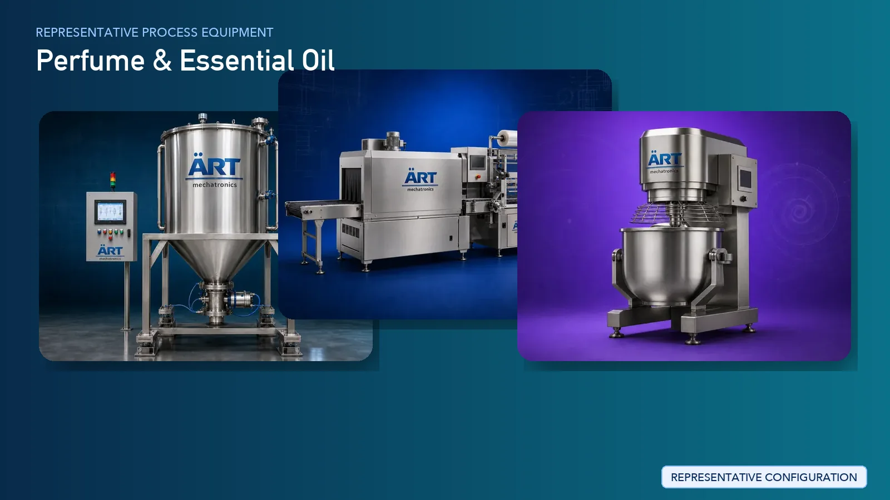

Perfume Manufacturing Plant & Machinery Solutions (Fragrance, Essential Oil & Perfume Packaging Systems)
Perfume manufacturing is a premium segment in the global personal care and luxury FMCG industry, producing products such as perfumes, deodorants, attars, fragrance compounds, and essential oils. These products require precise formulation, controlled blending, aroma preservation, and high-end…

About Perfume & Essential Oil processing
The process involves fragrance compounding, alcohol blending, maturation, filtration, and precision filling, followed by spray pump fitting, crimping, labeling, and packaging.
ART Mechatronics provides complete turnkey solutions for perfume manufacturing plants, offering advanced systems for fragrance mixing, essential oil processing, filtration, and high-speed filling and packaging. Our solutions are designed for premium product quality, consistency, and large-scale production for domestic and international markets.
Complete Perfume Process Flow
🌸 1. RAW MATERIAL HANDLING & STORAGE Fragrance oils, essential oils, alcohol, fixatives, and additives are received and stored. Machines Used:
- Stainless Steel Storage Tanks
- Dosing System
Ensures safe and contamination-free storage.
🧪 2. FRAGRANCE COMPOUNDING Different aromatic ingredients are blended to create fragrance bases. Machines Used:
- Mixing Tank
- Precision Dosing System
Ensures:
- Accurate formulation
- Consistent fragrance profile
🧴 3. PERFUME BLENDING Fragrance compounds are mixed with alcohol and other solvents. Machines Used:
Produces:
- Perfume liquid base
⏳ 4. MATURATION / AGING Perfume is stored for a specific period to stabilize fragrance. Machines Used:
- Aging Tanks
Ensures:
- Aroma development
- Product stability
🔍 5. FILTRATION Perfume is filtered to remove impurities. Machines Used:
- Filtration System
Ensures:
- Clear and premium product
❄️ 6. CHILLING (OPTIONAL) Perfume is chilled to remove wax or unwanted particles. Machines Used:
- Chilling Unit
🧴 7. STORAGE & HOLDING Final perfume is stored before packaging. Machines Used:
- Storage Tanks
🏭 8. FILLING & PACKAGING (HIGH-SPEED FMCG) Perfume is filled into bottles and assembled. Filling Machines Used:
Spray Pump Fitting / Crimping Machines Used:
Fixes spray pump securely.
Cap Placement Machines Used:
- Cap Sealing Machine
Labeling Machines Used:
- Labeling Machine
Outer Packaging Machines Used:
Final product ready for retail.
Essential Oil Processing
Process: Raw plant material → Extraction → Separation → Filtration → Storage Machines Used:
- Distillation Unit (Steam Distillation)
- Separator
- Filtration System
- Storage Tanks
Produces:
- Essential oils for fragrance and therapeutic use
Machinery Required for Perfume Plant
- Storage Tanks (SS)
- Dosing System
- Mixing & Blending Tanks
- Aging Tanks
- Filtration System
- Chilling Unit
- Essential Oil Distillation Unit
- Liquid Filling Machine
- Crimping Machine
- Capping Machine
- Labeling Machine
- Cartoning Machine
Turnkey Perfume Plant Solutions
ART Mechatronics offers complete turnkey solutions for perfume manufacturing plants, including:
- Process design & plant layout
- Fragrance compounding systems
- Essential oil extraction systems
- Blending and filtration systems
- Filling and packaging lines
- Automation & control panels
- Installation & commissioning
- After-sales support
We customize solutions based on:
- Product type (perfume, attar, essential oil)
- Production capacity
- Automation level
- Packaging format
Why Choose Art Mechatronics
- Expertise in liquid and fragrance processing systems
- Precision dosing and blending technology
- Hygienic stainless steel plant design
- High-end packaging integration
- Consistent product quality
- Global export capability
Machinery in a Perfume & Essential Oil plant
Where it's used
Get pricing & specs for the Perfume & Essential Oil plant
Share the product, target capacity, current process and plant location. These details help our engineers discuss the right machine or line configuration.
One partner, from design to start-up
ART Mechatronics designs, manufactures, installs and commissions your Perfume & Essential Oil solution with regional presence in India, UAE and Thailand.